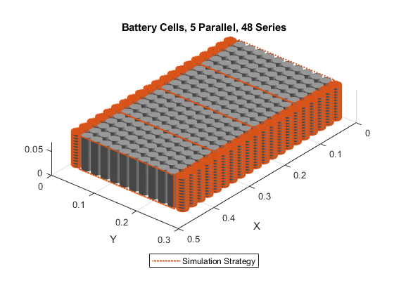
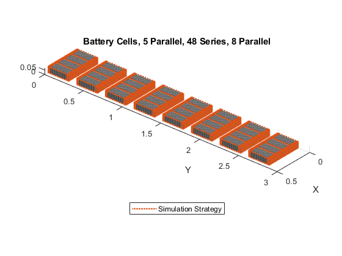
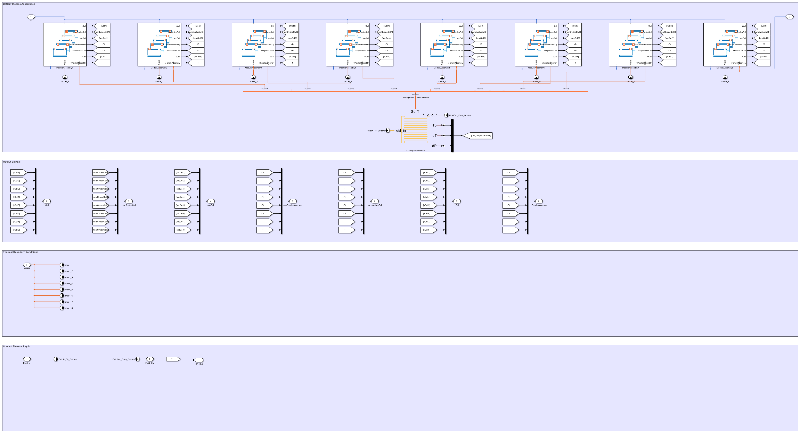
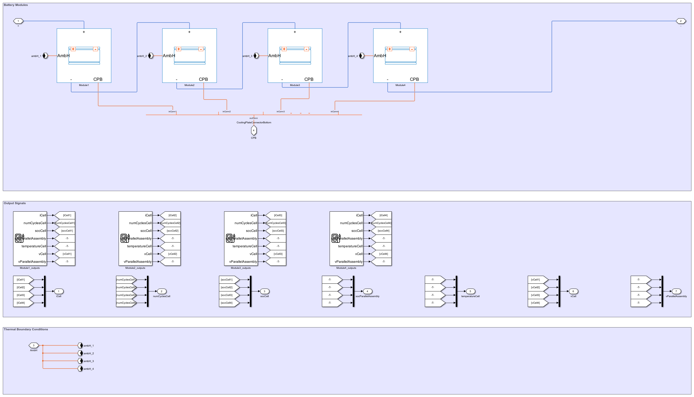

Create Battery Pack 5p48s8p: 8 Subpacks with 5 Parallel Strings of 48 Cells
The code below automates the creation of a battery pack with electrical and thermal connections. It uses MATLAB commands from the Battery Pack Builder to define the pack architecture and create the Simscape blocks for use in simulation.
- Fidelity: Grouped, 1-10-1 series, 5-1-5 parallel sets
- Thermal: Ambient and Cooling Plate
Contents
Import Simscape Battery Package
% Change to folder where this script exists cd(fileparts(which(mfilename))); import simscape.battery.builder.*
Define Cell
% Mass and geometry battCell_thr = Cell("Geometry",CylindricalGeometry); battCell_thr.Geometry.Radius = simscape.Value(21.55/2,'mm'); battCell_thr.Geometry.Height = simscape.Value(70.15,'mm'); battCell_thr.Mass = simscape.Value(66.9,'g'); % Enable thermal connections battCell_thr.CellModelOptions.BlockParameters.T_dependence = "yes"; battCell_thr.CellModelOptions.BlockParameters.thermal_port = "model";
Define Parallel Assembly
% Connect 5 cells in parallel pSet_thr = ParallelAssembly(Cell = battCell_thr, ... Rows = 5, NumParallelCells=5, Topology="Square"); % Reuse figure if it exists for battery chart if ~exist('h1_5p', 'var') || ... ~isgraphics(h1_5p, 'figure') h1_5p = figure('Name', 'h1_5p'); end figure(h1_5p); clf(h1_5p) % Create battery chart pSetChart = BatteryChart(Parent = h1_5p,... Battery=pSet_thr, SimulationStrategyVisible = "On"); xlabel('X');ylabel('Y'); title('Battery Cells, 5 Parallel');
Define Module
% Connect 12 parallel sets in series batt_5p12s_1g10g1_5g1g5_thr = Module(ParallelAssembly=pSet_thr, ... CoolingPlate = "Bottom",... NumSeriesAssemblies=12); % Define grouping to control fidelity batt_5p12s_1g10g1_5g1g5_thr.SeriesGrouping = [1,10,1]; % Unique behavior at ends of series batt_5p12s_1g10g1_5g1g5_thr.ParallelGrouping = [5,1,5]; % Same behavior for all cells at ends % Reuse figure if it exists for battery chart if ~exist('h1_5p12s_1g10g1_5g1g5', 'var') || ... ~isgraphics(h1_5p12s_1g10g1_5g1g5, 'figure') h1_5p12s_1g10g1_5g1g5 = figure('Name', 'h1_5p12s_1g10g1_5g1g5'); end figure(h1_5p12s_1g10g1_5g1g5); clf(h1_5p12s_1g10g1_5g1g5) % Create chart ModuleChart = BatteryChart(Parent = h1_5p12s_1g10g1_5g1g5,... Battery=batt_5p12s_1g10g1_5g1g5_thr, SimulationStrategyVisible = "On"); xlabel('X');ylabel('Y'); title('Battery Cells, 5 Parallel, 12 Series');
Define Module Assembly
% Connect 4 modules in series batt_5p48s_1g10g1_5g1g5_thr = ModuleAssembly(... Module = repmat(batt_5p12s_1g10g1_5g1g5_thr,1,4),... AmbientThermalPath = "CellBasedThermalResistance",... CoolantThermalPath = "CellBasedThermalResistance",... CoolingPlate = "Bottom",... StackingAxis="X"); % Reuse figure if it exists for battery chart if ~exist('h1_5p48s_1g10g1_5g1g5', 'var') || ... ~isgraphics(h1_5p48s_1g10g1_5g1g5, 'figure') h1_5p48s_1g10g1_5g1g5 = figure('Name', 'h1_5p48s_1g10g1_5g1g5'); end figure(h1_5p48s_1g10g1_5g1g5); clf(h1_5p48s_1g10g1_5g1g5) % Create chart BatteryChart(Parent = h1_5p48s_1g10g1_5g1g5,... Battery = batt_5p48s_1g10g1_5g1g5_thr, ... SimulationStrategyVisible = "On"); xlabel('X');ylabel('Y'); title('Battery Cells, 5 Parallel, 48 Series');
Define Pack
% Connect 8 of the module assemblies in parallel batt_5p48s8p_1g10g1_5g1g5_thr = Pack(... ModuleAssembly=repmat(batt_5p48s_1g10g1_5g1g5_thr,1,8),... InterModuleAssemblyGap = simscape.Value(0.1,"m"),... CircuitConnection="Parallel",... AmbientThermalPath = "CellBasedThermalResistance",... CoolantThermalPath = "CellBasedThermalResistance",... StackingAxis="Y"); % Reuse figure if it exists for battery chart if ~exist('h1_5p48s8p_1g10g1_5g1g5', 'var') || ... ~isgraphics(h1_5p48s8p_1g10g1_5g1g5, 'figure') h1_5p48s8p_1g10g1_5g1g5= figure('Name', '5p48s8p_1g10g1_5g1g5'); end figure(h1_5p48s8p_1g10g1_5g1g5); clf(h1_5p48s8p_1g10g1_5g1g5) % Create chart BatteryChart(Parent = h1_5p48s8p_1g10g1_5g1g5,... Battery = batt_5p48s8p_1g10g1_5g1g5_thr, ... SimulationStrategyVisible = "On"); xlabel('X');ylabel('Y'); title('Battery Cells, 5 Parallel, 48 Series, 8 Parallel');
Generate Simscape model for use in Simulink
If code does not already exist, generate code to produce Simscape block, Simulink library that assembles components into sub packs and packs, parameters for cell behavior, and parameters for initial conditions.
if(~exist('+pack_5p48s8p_1g10g1_5g1g5_Thr','dir')) buildBattery(batt_5p48s8p_1g10g1_5g1g5_thr,... "LibraryName","pack_5p48s8p_1g10g1_5g1g5_Thr",... "MaskInitialTargets","VariableNames",... "MaskParameters","VariableNames") end
Pack Model
This shows the Simulink block containing all 8 sub-packs
open_system('pack_5p48s8p_1g10g1_5g1g5_Thr') set_param('pack_5p48s8p_1g10g1_5g1g5_Thr','Lock','off')
This level shows the electrical and thermal connections of the subpacks.
set_param('pack_5p48s8p_1g10g1_5g1g5_Thr/Pack1','LinkStatus','none') open_system('pack_5p48s8p_1g10g1_5g1g5_Thr/Pack1','force')
Module Assembly
This level shows the electrical and thermal connections of the modules within the sub-pack.
set_param('pack_5p48s8p_1g10g1_5g1g5_Thr/Pack1/ModuleAssembly1','LinkStatus','none') open_system('pack_5p48s8p_1g10g1_5g1g5_Thr/Pack1/ModuleAssembly1','force')
close all bdclose all